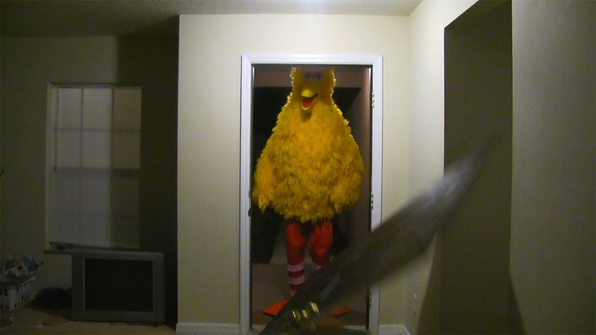

Hello World!
From Cori:
Hi, I'm Cori, and here are a few fun facts about me!
First, when I was a little kid, I lit my hair on fire because I wanted to see if my hair could burn. Spoiler alert, it did!
Second, throughout middle school and the first year of high school, I had a deep side part (sometimes with bangs) that looked absolutely atrocious. I thought I ate, but alas, I did not.
Lastly, I refuse to watch John Wick because I can't handle animals (especially dogs) dying. If I watch that movie, I know I'll never emotionally recover.
From Newt:
HOWDY! I'm Newt. I am certainly a person. I'm at least 85% sure I pass the turing test anyways.
I really would love to domesticate a possum given the chance! I'd name him Dr. Pepper. He'd eat at the dinner table like a proper person.
I have very strong opinions on the city of Castroville.
I plan on running for a dual-presidency position with my partner. As part of our campaign, we will saw the state of Oregon off of the continent, Looney Tunes style, and then kick it into the ocean.